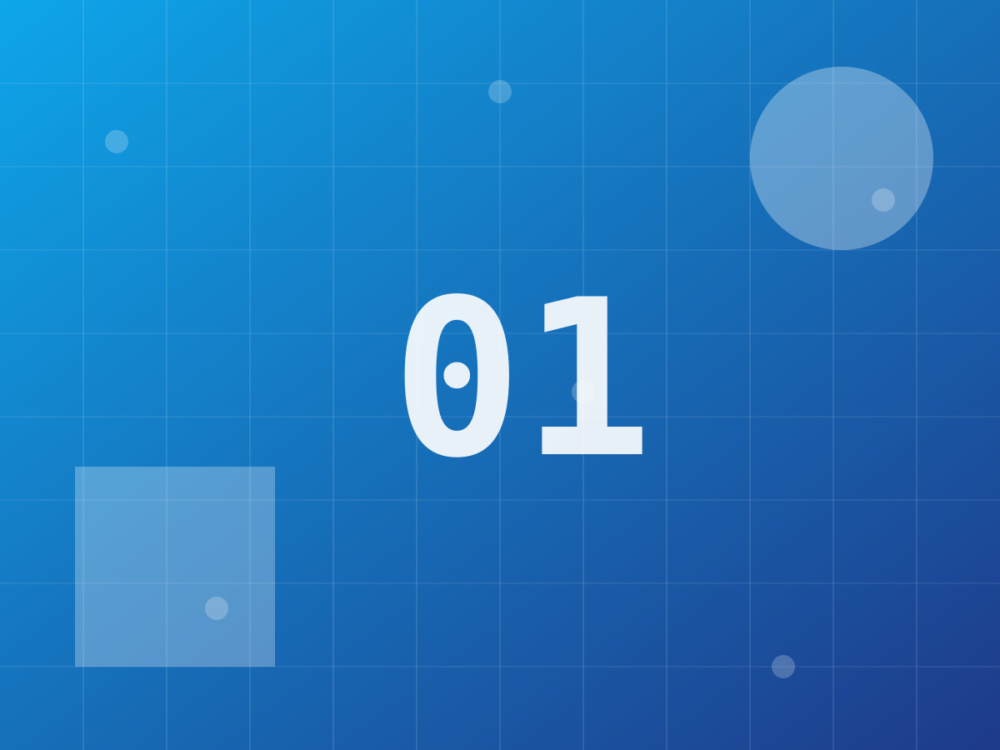
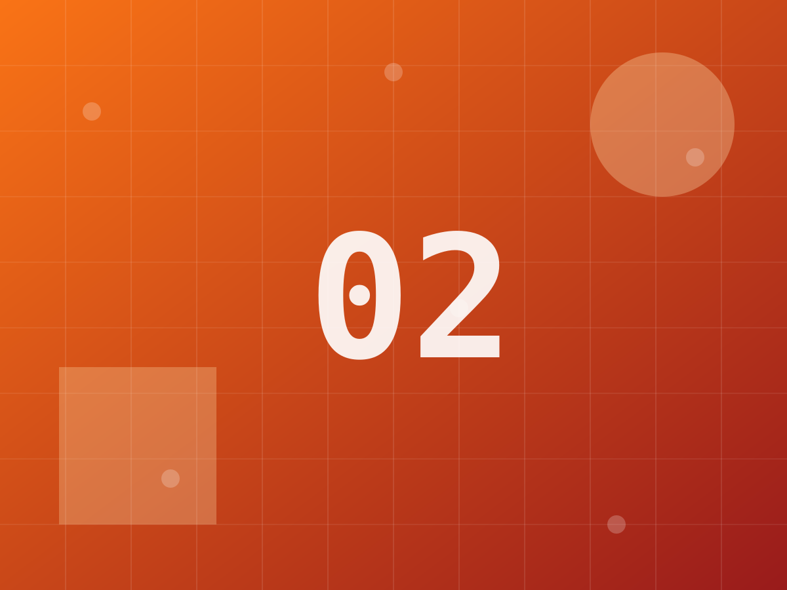
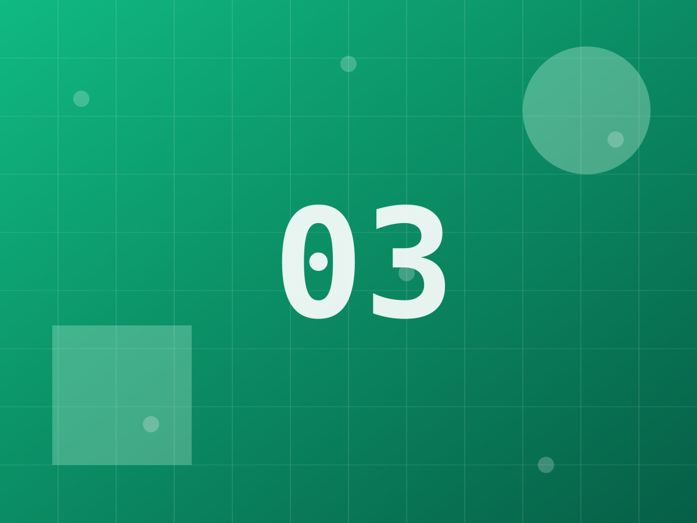
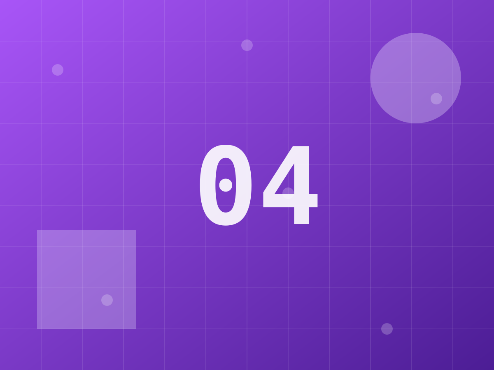
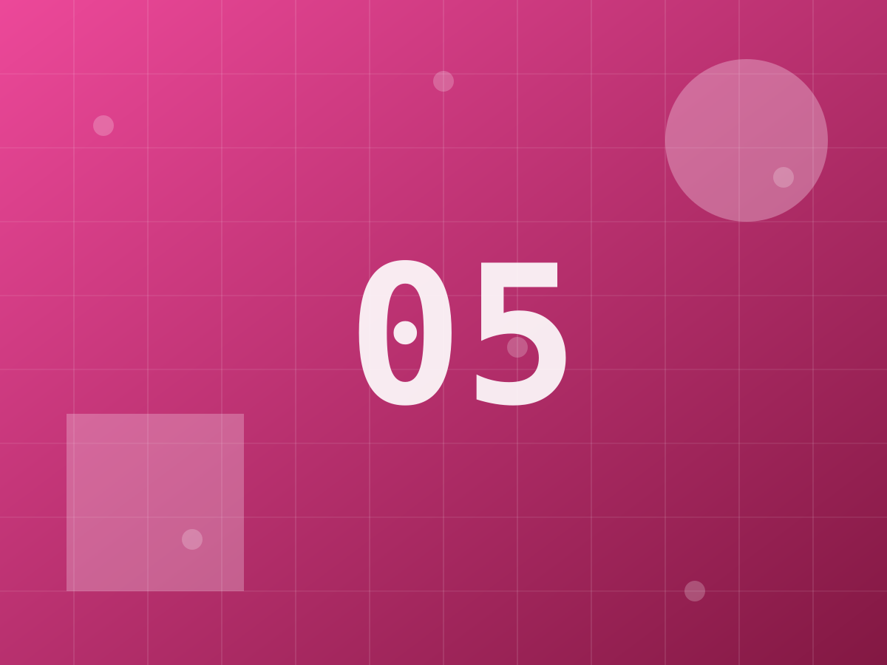
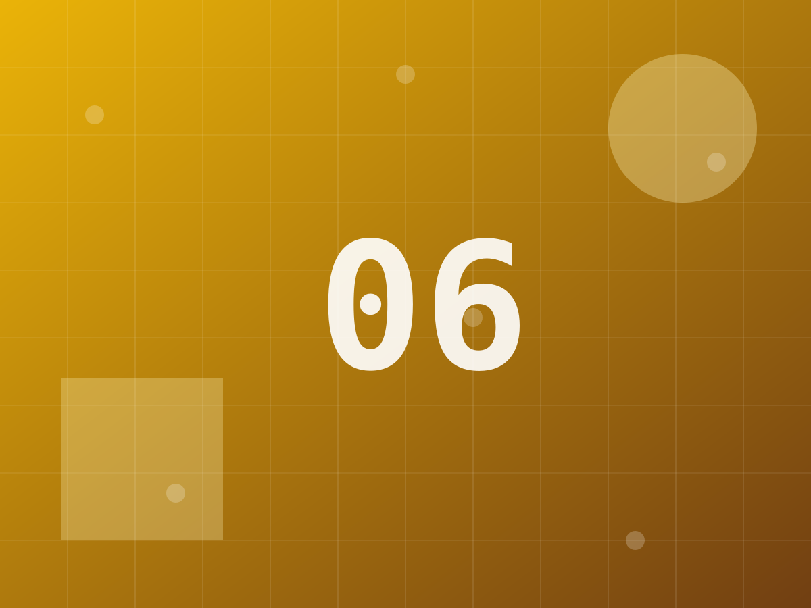
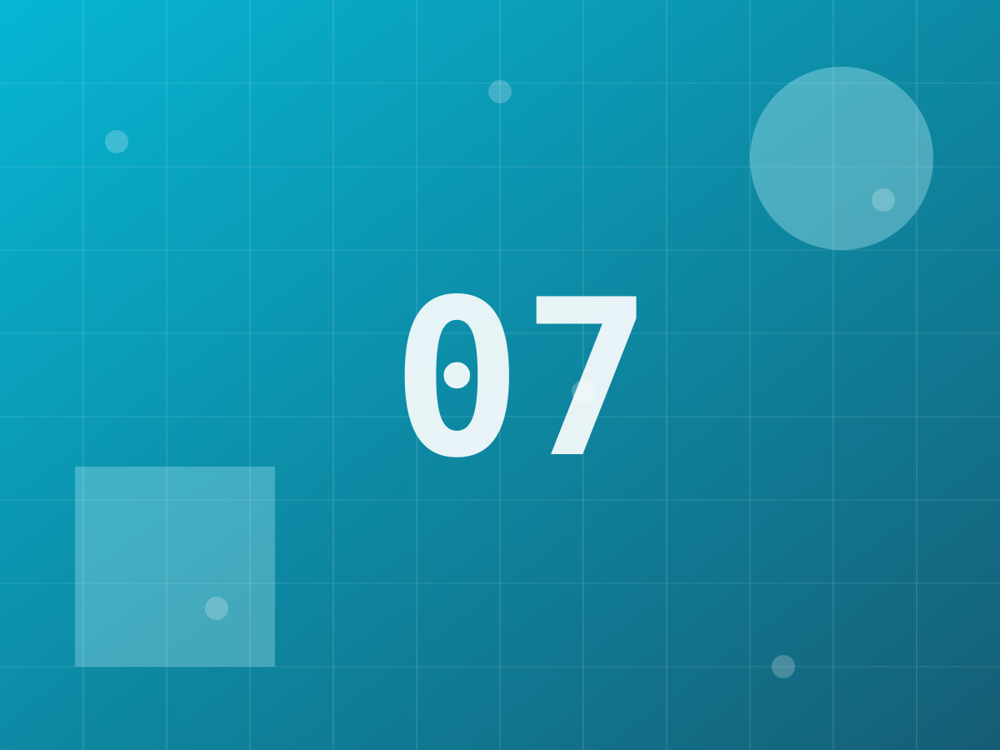
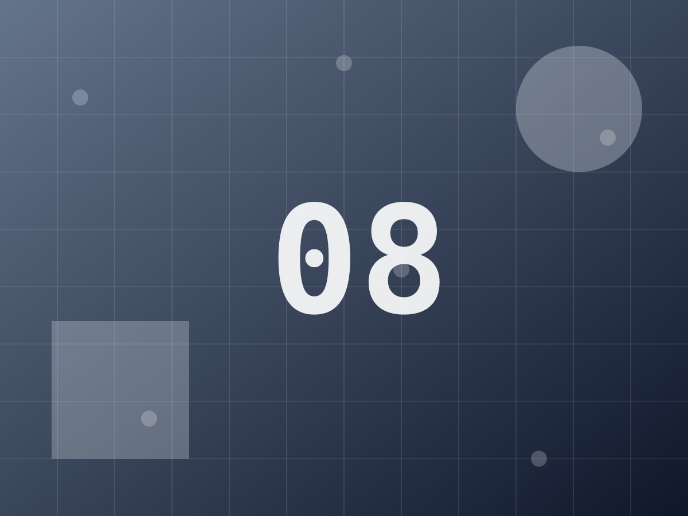

snapstrip
scroll-snap, ::scroll-button(), ::scroll-marker() 위에 만든 carousel.
스와이프·관성·스냅은 전부 네이티브 스크롤이다.
현재 경로: 확인 중…
1. playground — 설정을 직접 바꿔보기
설정 표면이 CSS 변수와 data-* 속성뿐이라 컨트롤이 그대로 대응된다.
아래 코드는 화면에 적용된 실제 상태에서 만들어진다 — 손으로 쓴 게 아니라서 어긋날 수 없다.
loop·autoplay·effect는 init() 시점에 배선되므로,
바꿀 때마다 destroy() 후 Carousel.init()으로 다시 만든다.
2. 기본 + 반응형
한 화면 아이템 수는 --carousel-items 하나. 브레이크포인트는 @container가 처리하고
JS는 관여하지 않는다. 창 너비를 줄여보면 1.2 → 2.5 → 4로 바뀐다.








코드 보기 — 기본 + 반응형
<div data-carousel class="gallery">
<ul data-carousel-scroller>
<li>…</li>
</ul>
</div>.gallery {
container-type: inline-size;
--carousel-items: 1.2;
--carousel-gap: 0.75rem;
}
/* container-type이 걸린 요소는 자기 자신의 컨테이너가 될 수 없다.
변수는 자손(스크롤러)에 선언하고 아이템이 상속받게 한다. */
@container (min-width: 30rem) {
.gallery [data-carousel-scroller] { --carousel-items: 2.5; }
}
@container (min-width: 45rem) {
.gallery [data-carousel-scroller] { --carousel-items: 4; }
}3. reveal — 커튼 + 패럴랙스
슬라이드 프레임이 clip-path로 커튼처럼 열리는 동안, 안쪽 미디어는 반대 방향으로 움직인다.
그래서 프레임만 지나가고 이미지는 제자리에 있는 것처럼 보인다. 천천히 스와이프하면 두 층이
따로 움직이는 게 보인다. 프리셋 6종 중 유일하게 두 요소를 동시에 움직이는 것이고,
JS는 여전히 0바이트다. --carousel-gap: 0과 한 화면 한 장일 때 가장 잘 맞는다 —
간격이 있으면 커튼 사이로 배경이 보여 연속된 필름이 아니라 카드처럼 읽힌다.
코드 보기 — reveal
<div data-carousel data-carousel-effect="reveal" class="reveal">
<ul data-carousel-scroller>
<li><img alt="" src="photo.jpg"></li>
</ul>
</div>@import 'snapstrip/effects.css'; /* 프리셋은 별도 파일 */
/* 커튼 은유가 전제하는 설정: 한 화면 한 장, 간격 없음 */
.reveal { --carousel-items: 1; --carousel-gap: 0px; }4. peek — 소수 아이템 수
--carousel-items: 2.5. peek 전용 변수가 없다. 소수로 적으면 다음 아이템이 그만큼 걸쳐 보인다.
아래는 같은 값에 --carousel-align: center만 더한 것으로, 앞뒤 대칭 peek이 공짜로 나온다.
코드 보기 — peek
/* 소수가 peek을 만든다. peek 전용 변수는 없다. */
.peek { --carousel-items: 2.5; }
/* center 정렬이면 같은 값이 앞뒤 대칭 peek이 된다 */
.centered { --carousel-items: 2.5; --carousel-align: center; }5. loop + autoplay
data-carousel-loop은 아이템을 3세트로 복제하고 scrollend에 위치만 조용히 되돌린다.
autoplay는 hover·포커스·화면 밖에서 멈추고, 사용자가 스크롤하거나 버튼을 누르면 영구히 멈춘다.
prefers-reduced-motion이면 아예 시작하지 않는다.
여기에는 data-carousel-autoplay-resume="5000"을 걸어뒀다 — 영구 정지 대신
마지막 입력으로부터 5초가 조용히 지나면 다시 돈다. 스와이프해보고 손을 떼고 기다려보면 된다.
코드 보기 — loop + autoplay
<div
data-carousel
data-carousel-loop
data-carousel-autoplay="2600"
data-carousel-autoplay-resume="5000"
>
<ul data-carousel-scroller>
<li>…</li>
</ul>
</div>6. 썸네일 연동
data-carousel-thumbs="#strip". 스트립도 그냥 carousel이라 자기 스크롤과 스냅을 그대로 갖는다.
코드 보기 — 썸네일 연동
<div data-carousel data-carousel-thumbs="#strip">
<ul data-carousel-scroller>
<li>…</li>
</ul>
</div>
<div data-carousel id="strip">
<ul data-carousel-scroller>
<li>…</li>
</ul>
</div>#strip { --carousel-items: 5; --carousel-gap: 0.5rem; }
/* 현재 썸네일에 라이브러리가 붙여주는 클래스 */
#strip [data-carousel-scroller] > li { opacity: 0.4; }
#strip [data-carousel-scroller] > .carousel-thumb-current { opacity: 1; }7. 수직 축
data-carousel-axis="block". 같은 변수, 같은 마크업. 스크롤러에 확정된
block-size가 필요하다 — flex-basis의 100%가 주축 크기를 기준으로 풀리기 때문.
코드 보기 — 수직 축
<div data-carousel data-carousel-axis="block" class="vertical">
<ul data-carousel-scroller>
<li>…</li>
</ul>
</div>.vertical { --carousel-items: 2; }
/* 블록 축은 스크롤러에 확정된 block-size가 필요하다 —
flex-basis의 100%가 주축 크기를 기준으로 풀리기 때문. */
.vertical [data-carousel-scroller] { block-size: 19.5rem; }8. marquee — carousel이 아니다
스크롤 컨테이너가 없어서 스와이프도, 스냅도, 도트도, 현재 아이템 개념도 없다. 순수 CSS 띠다.
CSS는 DOM을 복제할 수 없으므로 사본은 마크업에서 직접 넣고 aria-hidden을 붙인다.
hover하면 멈춘다.
- scroll-snap
- ::scroll-button()
- ::scroll-marker()
- scroll-marker-group
- animation-timeline: view()
코드 보기 — marquee
<!-- CSS는 DOM을 복제할 수 없다. 사본은 직접 넣고 aria-hidden을 붙인다. -->
<div data-carousel-marquee>
<ul data-carousel-marquee-track>
<li>A</li><li>B</li><li>C</li>
<li aria-hidden="true">A</li>
<li aria-hidden="true">B</li>
<li aria-hidden="true">C</li>
</ul>
</div>@import 'snapstrip/effects.css';
[data-carousel-marquee] { --carousel-marquee-duration: 18s; }9. JavaScript API
표면은 이게 전부다. 설정 객체는 없다 — 레이아웃은 CSS가, 동작은 data-*가 맡는다.
carousel:change 이벤트가 여기 표시됨
코드 보기 — JavaScript API
// carousel 속성은 HTMLElement에 선언돼 있다 —
// querySelector<HTMLElement>로 받아야 타입이 붙는다.
const root = document.querySelector<HTMLElement>('[data-carousel]');
root?.carousel?.next();
root?.carousel?.goTo(4);
document.addEventListener('carousel:change', (event) => {
console.log(event.detail.index, event.detail.slideIndex);
});